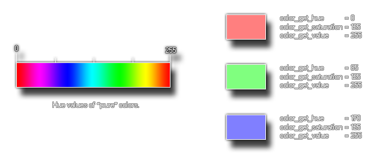

color_get_hue
Returns the hue of the color given.
Syntax:
color_get_hue(col);
| Argument | Description |
|---|---|
| col | The color to check |
Returns : Real
Description
This function will return the hue of the given color. This is the "pure" color tone which is part of the hue, saturation and value (luminosity) method for defining a color. The following image illustrates how this value corresponds to the HSV scale of color: 
Example :
col = merge_color(color_get_hue(c_teal), c_white, 0.5);
The above code gets the hue used to make the color constant "c_teal" and then merges it with white at a 50:50 ratio, storing the resulting color in the variable "col".
Back : Color And Blending
Next : color_get_saturation